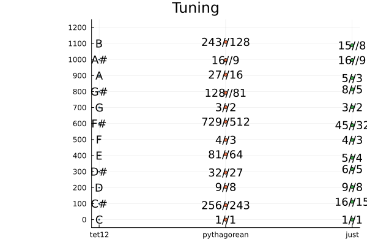
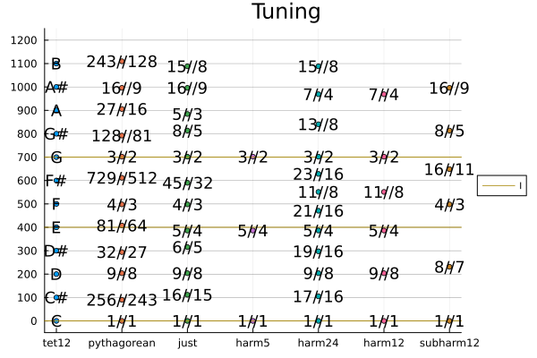

TuningSystems
Using https://sli.dev/guide/syntax
The equal tempered tuning
Frequency ration between each semi-tone == 2^(1/12) ~ 1.06
using TuningSystems
using DataFrames
DataFrame(tet12)
12×3 DataFrame
Row │ tet12_name tet12_cents tet12_diff_cents
│ String Float64 Float64
─────┼───────────────────────────────────────────
1 │ C 0.0 0.0
2 │ C# 100.0 0.0
3 │ D 200.0 -0.0
4 │ D# 300.0 0.0
5 │ E 400.0 0.0
6 │ F 500.0 -0.0
7 │ F# 600.0 0.0
8 │ G 700.0 0.0
9 │ G# 800.0 0.0
10 │ A 900.0 0.0
11 │ A# 1000.0 0.0
12 │ B 1100.0 0.0
TODO: Play
Questions
- Why any other tunings?
- Why 12 semi-tones?
Pythagorean tuning
Harmonic intervals:
- 2:1 Octave
- 3:2 Fifth
TODO: Play
Circle of Fifth
[(3/2)^x for x in 0:12]
13-element Vector{Float64}:
1.0
1.5
2.25
3.375
5.0625
7.59375
11.390625
17.0859375
25.62890625
38.443359375
57.6650390625
86.49755859375
129.746337890625(3/2)^12 = 129.75 ~ 128 == 2^7So close ...
Pitch Classes
Equivalence classes of the octave.
\BB{R} \ 8
[(pitch_class.((3/2)^x)) for x in 0:12]
13-element Vector{Float64}:
1.0
1.5
1.125
1.6875
1.265625
1.8984375
1.423828125
1.06787109375
1.601806640625
1.20135498046875
1.802032470703125
1.3515243530273438
1.0136432647705078Cents
Divide the octave in 1200 logarithmically
cents(x) = log(x)/log(2^(1/1200))
[cents.(pitch_class.((3/2)^x)) for x in 0:12]
13-element Vector{Float64}:
0.0
701.9550008654002
203.91000173077856
905.8650025961787
407.8200034615571
1109.7750043269573
611.7300051923356
113.68500605771398
815.6400069231142
317.5950077884925
1019.5500086538927
521.5050095192711
23.46001038464944- Overshoots about 2 cents each time
Actual pythagorean
- Use 3/2 and 2/3
julia> DataFrame(pythagorean)
12×3 DataFrame
Row │ pythagorean_name pythagorean_cents pythagorean_diff_cents
│ String Float64 Float64
─────┼─────────────────────────────────────────────────────────────
1 │ 1//1 0.0 0.0
2 │ 256//243 90.225 -9.78
3 │ 9//8 203.91 3.91
4 │ 32//27 294.135 -5.87
5 │ 81//64 407.82 7.82
6 │ 4//3 498.045 -1.96
7 │ 729//512 611.73 11.73
8 │ 3//2 701.955 1.96
9 │ 128//81 792.18 -7.82
10 │ 27//16 905.865 5.87
11 │ 16//9 996.09 -3.91
12 │ 243//128 1109.78 9.78This gives 12 almost equally spaced tones using fractions.
Just intonation
- Use "simple" fractions (5-limit).
- I, IV, V are all in ratios: 4:5:6
DataFrame(just)
12×3 DataFrame
Row │ just_name just_cents just_diff_cents
│ String Float64 Float64
─────┼────────────────────────────────────────
1 │ 1//1 0.0 0.0
2 │ 16//15 111.731 11.73
3 │ 9//8 203.91 3.91
4 │ 6//5 315.641 15.64
5 │ 5//4 386.314 -13.69
6 │ 4//3 498.045 -1.96
7 │ 45//32 590.224 -9.78
8 │ 3//2 701.955 1.96
9 │ 8//5 813.686 13.69
10 │ 5//3 884.359 -15.64
11 │ 16//9 996.09 -3.91
12 │ 15//8 1088.27 -11.73Compare
using Plots
plot(tet12, markersize=1)
plot!(pythagorean)
plot!(just)
Harmonic Series
[pitch_class.(x) for x in 1//1:5]
5-element Vector{Rational{Int64}}:
1
1
3//2
1
5//4using TuningSystems
using Plots
plot(tet12)
plot!(pythagorean)
plot!(just)
harm5 = harmonics(5)
plot!(harm5)
hline!([0,400,700], label="I")The first 5 hamonics give the major triad!

More harmonics
using TuningSystems
using Plots
plot(tet12)
plot!(pythagorean)
plot!(just)
harm5 = harmonics(5)
plot!(harm5)
hline!([0,400,700], label="I")
plot!(harmonics(24))24 harmonics give 12 tones, but not equally spaced. 4 just + 2 almost just.
- (Minor Second 17//16 ~ 16//15)
- Major second 9//8
- (Minor Third 19/16 ~ 6//5)
- Major Third 5//4
- Perfect Fifth 3//2
- Major Seventh 15//8
Subharmonics
using TuningSystems
using Plots
plot(tet12)
plot!(pythagorean)
plot!(just)
harm5 = harmonics(5)
plot!(harm5)
hline!([0,400,700], label="I")
plot!(harmonics(24))
plot!(harmonics(12))
plot!(subharmonics(12))The subharmonics only give us 3 extra just (total 7 + 2 close)
- Fourth 4//3
- Minor Sixth 8//5
- Minor seventh 16//9
Harmonics
Harmonics avoid: Tritonus (600 cents, F#), Major Sixth (5//3, A)
Playing Tunings
Triads
- 3:2, 5:4 = 6:5:4, Play and equal temper approximation
What is 3:2:1? Ocave + fifth. Play equal temper approximation.
- 4:3:2: Octave + Fifth
- 5:4:3: inversion of major triad
- 6:5:4: major triad
- 6:5:4:3 major triad
In just intonation the 3 major triads: tonica, dominant, subdominant (I, IV, V) all have this ratio:
–- IV–- –- I –- –- V –- F A C E G B D 2/3 5/6 1/1 5/4 3/2 15/8 9/4 4:5 5:6 4:5 5:6 4:5 5:6
Sevenths harmonics
cents(7/4)
968.8259064691424Not in the diatonic scale.
TODO: play 7:6:5:4. [0 386 702 969]
Compare to [0 400 700 1000] C7